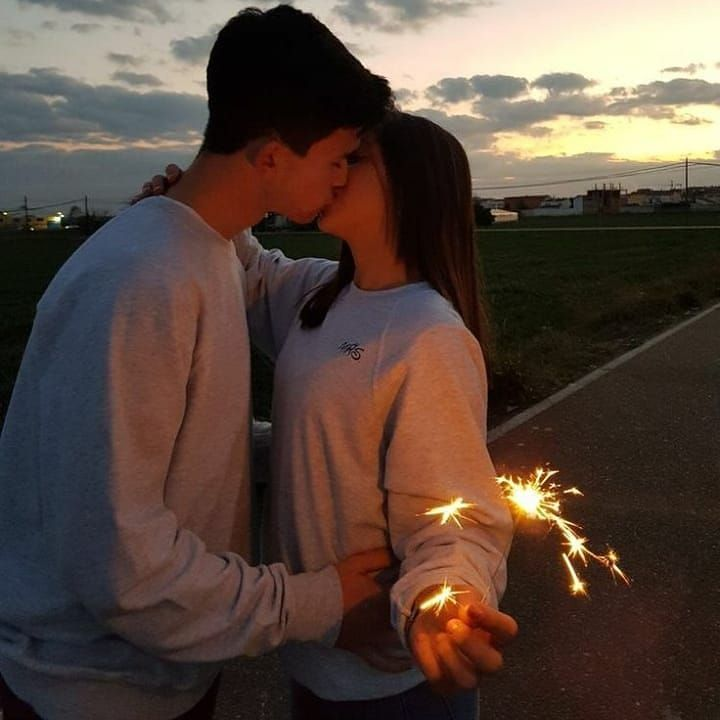

История о поцелуе
В тусклом свете старых уличных фонарей Верона казалась совершенно иной. Не та, что на открытках для туристов, а та, что дышала тайнами и шепотом веков. Я, Джульетта Капулетти, в пятнадцать лет, стояла на краю этого мира, влюбленная до безумия в парня из враждующей семьи – Ромео Монтекки.
Наши встречи всегда были украденными мгновениями, глотками свежего воздуха в душной атмосфере многолетней вражды. Сегодня вечером, после бала у лорда Капулетти, где мы лишь мельком обменялись искрами взглядов среди пышных платьев и чопорных улыбок, он ждал меня под балконом.
Его силуэт виднелся в полумраке, словно вырезанный из ночи. Ромео! Простое имя, которое в моих устах звучало как заклинание, как мольба.
Он поднял голову, и наши взгляды встретились. Я почувствовала, как сердце заколотилось в груди, отбивая дикий, сумасшедший ритм. В его глазах плясал отблеск фонаря, делая их бездонными, как ночное небо, усыпанное звездами.
"Джульетта," – прошептал он, и этот звук, хоть и тихий, пронзил меня до кончиков пальцев.
Я спустилась вниз по увитой плющом стене, ступая по камням так тихо, будто боялась разбудить спящий город. Когда мои ноги коснулись земли, Ромео шагнул ко мне.
Мы стояли лицом к лицу, разделенные лишь одним выдохом. Он смотрел на меня с такой нежностью, с такой жаждой, что у меня перехватило дыхание. Он поднял руку и коснулся моей щеки, большим пальцем очерчивая контур моей губы.
"Я так долго ждал этого момента," – его голос был тихим, хриплым от волнения.
Я не ответила. Слова казались лишними. Вселенная сузилась до размеров этого мгновения, до запаха земли после дождя, до трепета моего сердца, до его взгляда, наполненного любовью.
Он наклонился, и время остановилось. Я почувствовала тепло его дыхания на своих губах. Этот первый поцелуй был совсем не похож ни на что, что я когда-либо испытывала. Это было электричество, пробегающее по всему телу. Это была чистая, незамутненная радость. Это был страх и волнение, переплетенные в один клубок.
Его губы были мягкими, нежными. Поцелуй был робким, осторожным, словно мы боялись, что он исчезнет, как утренний туман. Но он не исчез. Он углублялся, становился более требовательным, утоляя голод, который мы оба так долго испытывали.
В этот момент я забыла обо всем: о вражде между нашими семьями, о чудовищных последствиях нашей любви, о будущем, которое казалось таким неопределенным. Была только я, Джульетта, и он, Ромео. И этот поцелуй, который был обещанием, клятвой, мольбой.
Когда мы, наконец, оторвались друг от друга, воздух вокруг нас звенел от напряжения. Наши глаза были расширены, наши щеки горели.
"Ты прекрасна," – выдохнул Ромео, и я поняла, что в этом мгновении, в этой ночи, я готова отдать ему всю себя без остатка.
Этот поцелуй в пятнадцать лет, под мерцающим светом веронских фонарей, стал началом всего. Началом нашей любви, такой яркой и прекрасной, но такой обреченной. Началом трагедии, которая навсегда вошла в историю. Но в тот момент, в этом украденном мгновении, был только он, Ромео, и я, Джульетта, связанные вместе, как две звезды, обреченные сиять ярко, а затем навсегда погаснуть в вечной ночи.
